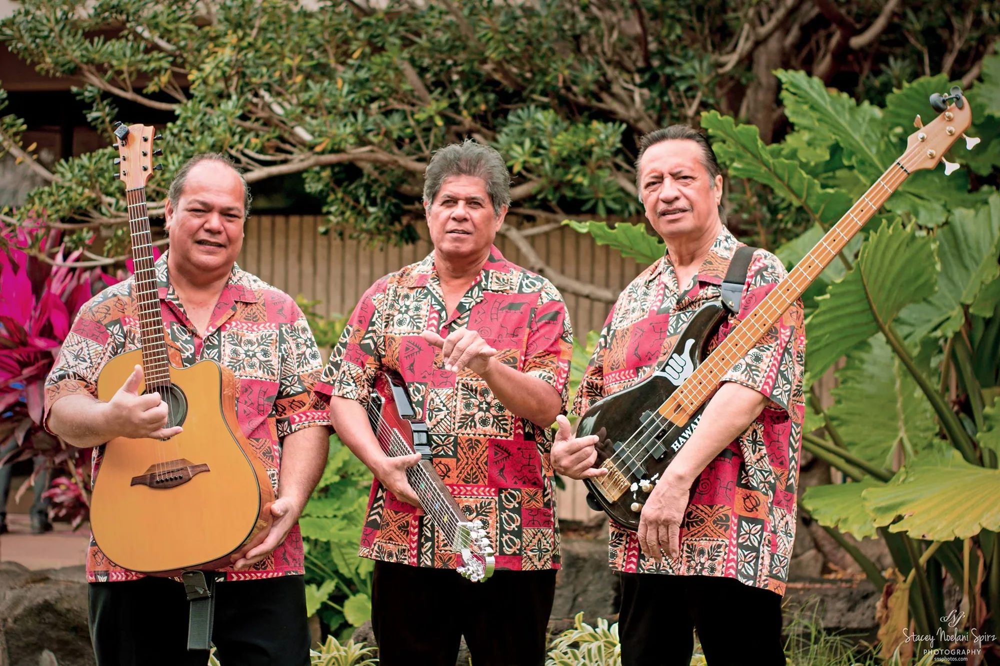

← All galleries
Portraits & Candid
A few of the faces, expressions, and shared moments I have been fortunate to photograph.
8 selected photographs
← Back to portfolio
Making music together1 / 8
Swipe the photographs sideways or use the arrows. Tap the large image to see it full screen.
Keep exploring